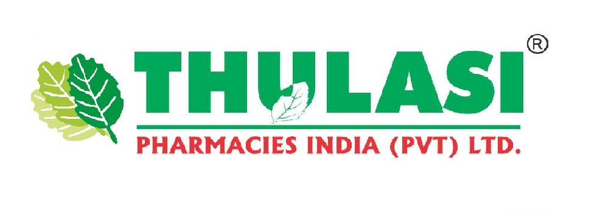
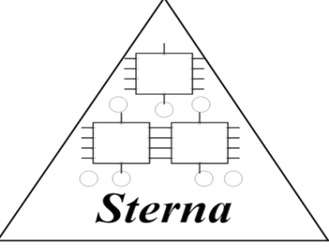
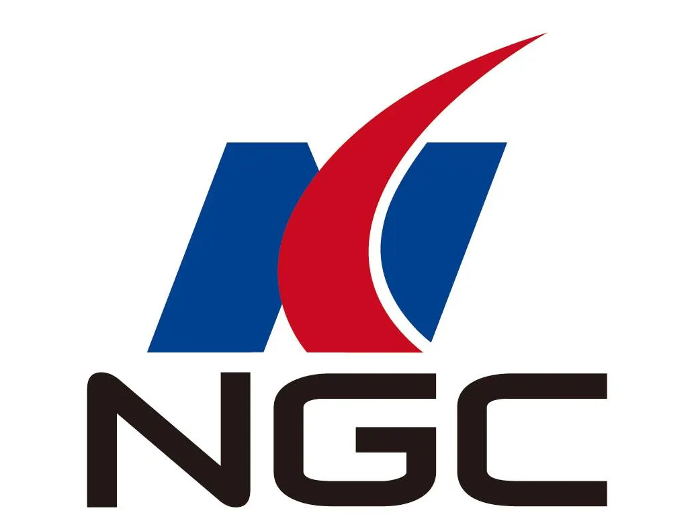
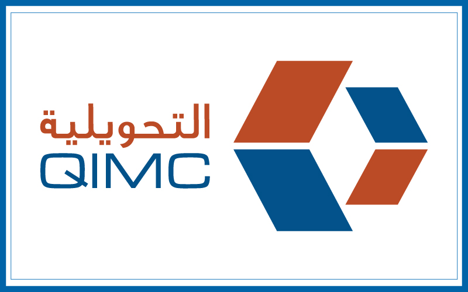
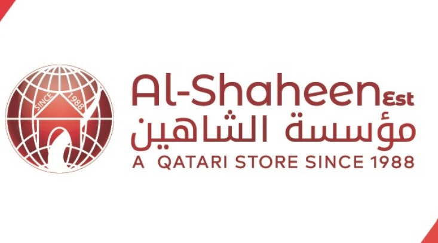
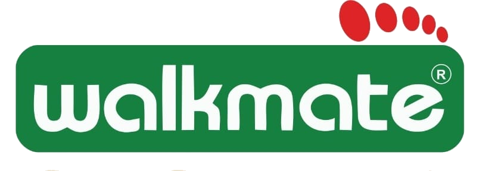
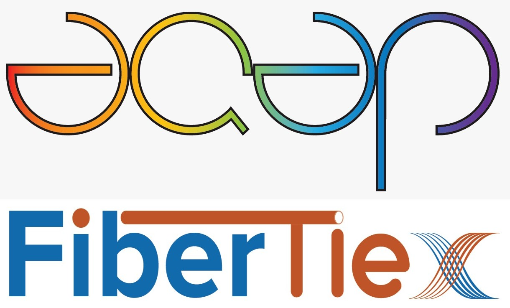
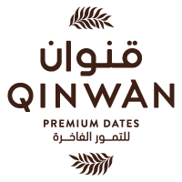
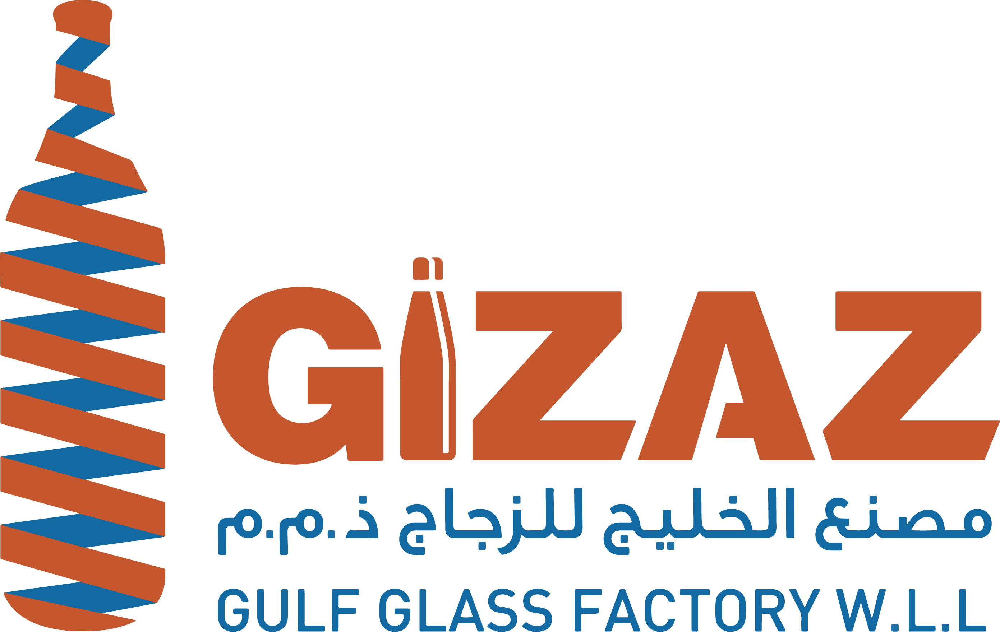
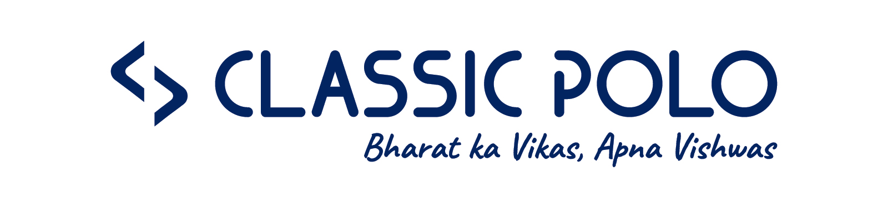

Featured Projects

Stock Management Portal
SILK ROUTES INTL CO.LLC
Comprehensive inventory management system for tracking stock inward, transfer, customer enquiries, service, and installation workflows with real-time dashboards.
SSP Ticket Management
Indus Novateur
Comprehensive ticket management platform with workflow stages including Open, Assigned, WIP, Solution, and Closed. Features SLA tracking, worklog, and management reports.

Employee Self-Service Approval Portal
Thulasi Pharmacy
Developed an Angular and Express.js-based ESS Portal for branch-wise employee Leave, Permission, On Duty, Miss Punch, Week Off and Shift applications, with role-based HR/Manager/Client Visit Manager approvals, attendance tracking, reports, approval rollback, JWT authentication, and MS SQL Server integration.

Employee Self-Service
Sterna Security Devices Pvt Ltd
Centralized ESS platform simplifying HR activities — employees submit leave, permission, and on-duty requests with manager approval workflows.
E-Procurement Portal
Hyundai AutoEver
Enterprise-grade e-procurement and bidding system with vendor management, RFQ workflows, and centralized procurement master management.

Manufacturing Control Plan & Raw Material Inspection Portal
NGC
A manufacturing quality-control application developed to manage product-wise Control Plans and BOM/raw-material inspection requirements.

Employee Self-Service (ESS) Portal
Qatar Industrial Manufacturing Company (QIMC)
Developed an Employee Self-Service (ESS) Portal for QIMC, Qatar, enabling employees to manage Leave, On Duty, Loan, Asset Requests, Expense Claims, and related application statuses. The portal also provides approval workflows, employee reports, company announcements, and document downloads such as payslips.

Employee Self-Service & Support Portal
International Business Development L.L.C (IBD)
Developed an Angular + Express.js Employee Self-Service & Support Portal for IBD, Oman, covering Leave, Permission, On Duty, approval/rejection workflows, employee details, support tickets, automated email notifications, SAP HANA/MS SQL Server integration, and IIS deployment.

Employee Self-Service (ESS) Portal
Al Shaheen
Developed and maintained an ESS Portal for Al Shaheen, Qatar, implementing employee Leave, Rejoin, Loan, ID Renewal, On Duty Claim and Asset Request workflows with approval/rejection processes, application tracking, reports, payslip/ESS downloads, and SAP HANA integration using Angular, Express.js, and IIS.
Purchase Quotation Portal
Al Shaheen
Developed a Purchase Quotation Management Portal for Al Shaheen, Qatar using Angular, Express.js, SAP HANA SQL, and IIS, supporting quotation creation, item/pricing management, discount and total calculations, attachments, Excel bulk import, validation, and quotation reporting.
Human Resource Management System (HRMS)
TAB India
Supported and enhanced a Human Resource Management System (HRMS) for TAB India to manage employee self-service activities, attendance, leave, OD/Permission, Miss Punch, approvals, payroll information, and employee profile management.

Production Management Portal
WALKMATE FOOTWEAR (INDIA) PRIVATE LIMITED
A production management application developed for Walkmate Footwear, India, supporting manufacturing and job-work operations. The portal manages Job Orders, Job Order DC, GRN, daily/monthly production, barcode processing, small-carton production, stock transfers, and SAP/API integrations.
Sales Order Management Portal
WALKMATE FOOTWEAR (INDIA) PRIVATE LIMITED
Provided development and production support for Walkmate Footwear’s Sales Order Management Portal, implementing and enhancing order processing, return management, approval workflows, distributor management, financial balances, coupon schemes, executive tracking, reporting, notifications, and role-based user access.
Jumbo Service Customer Survey
Jumbo Electronics
Developed the backend and supported the frontend integration for Jumbo Electronics’ Service Customer Survey Portal, enabling dynamic survey question/answer management, conditional question handling, validation and customer feedback submission.

Purchase Request & Approval Portal
Amiantit Qatar Pipes Co. (AQAP) / FiberTie Pipe Factory and Accessories W.L.L (Fibertie)
Developed a Purchase Request & Approval Portal for Amiantit Qatar Pipes Co. and FiberTie Pipe Factory and Accessories W.L.L. The system supports purchase request creation, department-level approval, PO approval, request tracking, and procurement reporting.
Employee Self-Service
Integra Automation Pvt Ltd
Developed an Employee Self-Service (ESS) Portal for Integra Automation Private Limited to manage employee requests, attendance, and approval workflows. The portal provides employees with Leave, Permission/OD, Attendance Regularization, Shift Change, and request-status tracking, along with manager/HR approval features. The uploaded source confirms these Request, Status, Approval, Attendance, and Biometric Attendance modules.
Route Cause Analysis Portal
Integra Automation Pvt Ltd
Supported and enhanced a Route Cause Analysis & Rejection Management Portal for Integra Automation Private Limited, India using Angular, Node.js, MS SQL Server, and IIS, covering rejection management, route cause analysis, review and approval workflows, master data, and user/approval authorization.
Calibration Management Portal
Integra Automation Pvt Ltd
Supported and enhanced a Calibration Management Portal for Integra Automation Private Limited to manage calibration activities, measuring instruments, equipment, gauges, calibration schedules, and related requests. The system also handles instrument issue/return, breakage, return and scrap approval processes, calibration history, reports, location access, and user authorization.
Employee Self-Service & HR Management Portal
SEDRES
Developed an Employee Self-Service & HR Management Portal for SEDRES, Qatar, to manage employee information, Leave, Permission, and HR-related requests.
Employee Self-Service & HR Portal
Gas Exporting Countries Forum (GECF)
Developed an Employee Self-Service & HR Management Portal for Gas Exporting Countries Forum (GECF) using Angular, Node.js/Express.js, Nodemailer, SAP HANA SQL, and IIS, covering employee requests, HR and personnel services, approval workflows, automated email notifications, and comprehensive reporting.

Inventory Management Portal
Qinwan Dates
Supported and enhanced the Qinwan Dates Inventory Management Portal, covering inventory management, stock availability, shop-to-shop transfers, delivery tracking and approval processes. The system also provides role/screen-based authorization to control access to different modules.
Employee Self-Service (ESS) Portal
Indus Novateur Pvt Ltd
Developed and enhanced a single-page Employee Self-Service (ESS) Portal for Indus Qatar, implementing a dynamic Angular dashboard with employee information, Leave, On Duty and Loan requests, reports, approval setup, announcements, leave-balance tracking, role-based Admin/HR functionality, backend API integration, SAP HANA SQL connectivity, and IIS deployment.
Employee Self-Service (ESS) Portal
ALWAHA FOR CARS
Developed an Employee Self-Service (ESS) Portal for ALWAHA FOR CARS, Qatar, enabling employees to manage Leave, On Duty, Loan, Asset Requests, Expense Claims, and related application statuses. The portal also provides approval workflows, employee reports, company announcements, and document downloads such as payslips.

Employee Self-Service (ESS) Portal
Gizaz Glass Container Company W.L.L(GIZAZ)
Developed an Employee Self-Service (ESS) Portal for Gizaz Glass Container Company W.L.L(GIZAZ), Qatar, enabling employees to manage Leave, On Duty, Loan, Asset Requests, Expense Claims, and related application statuses. The portal also provides approval workflows, employee reports, company announcements, and document downloads such as payslips.

Order Booking Portal
Classic Polo
Developed an Order Booking Management Portal for Classic Polo to manage the complete order booking and order tracking process. The system supports multiple order booking types, order forwarding, order viewing, status tracking, and PT file downloads.
Production, Purchase & Business Reporting Portal
Classic Polo
Supported and enhanced a production and business reporting portal for Classic Polo, providing centralized visibility into production WIP stock, purchase activities, NDC operations, GST, accounts, and inventory-related reports.
Sales & Employee Management Portal
Classic Polo
Developed and implemented a Sales & Employee Management Portal for Classic Polo, India, enabling Target, Tour Plan, Secondary Sales and Dealer data uploads, DSR and employee activity approvals, attendance tracking, Leave, Permission and Reimbursement workflows, and comprehensive business reporting using Angular, Node.js, MS SQL Server, and IIS.
Employee Self-Service (ESS) Portal
NIMR Oil Well Maintenance Company
Developed an Employee Self-Service (ESS) Portal for NIMR Oil Well Maintenance Company, Qatar, enabling employees to manage Leave, On Duty, Loan, Asset Requests, Expense Claims, and related application statuses. The portal also provides approval workflows, employee reports, company announcements, and document downloads such as payslips.
Asset & Maintenance Management Portal
Sindoori Management Solutions Private Limited
Supported and enhanced an Asset & Maintenance Management Portal for managing assets, breakdowns, preventive maintenance, calibration, PCB repair, battery assembly, projects, and maintenance-related reporting. The portal also provides role-based screen and report access for different users.